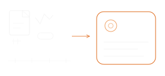

DuxMedic
BuildingA medical workspace that helps people and caregivers manage their health information, guide them through the healthcare system, and research complex conditions by integrating all of their health data while using cutting-edge medical research search tools and frontier thinking language models.
Health
Company